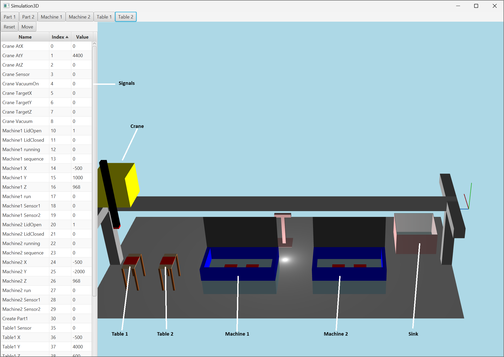
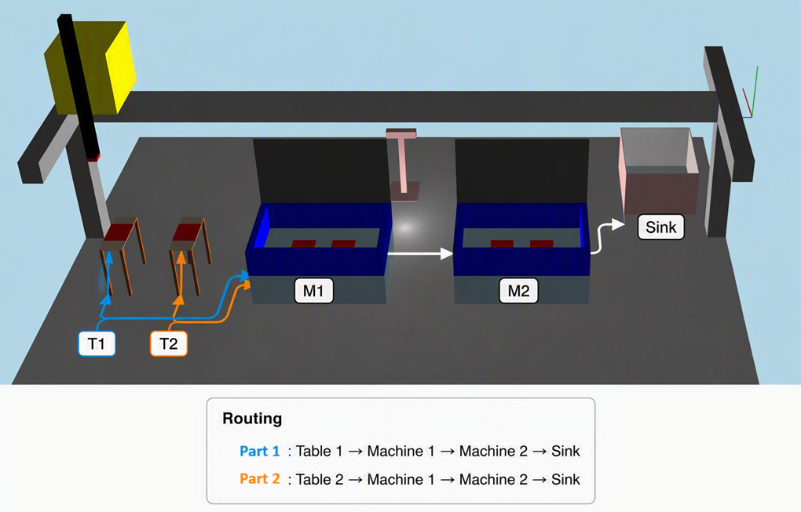

Start the Crane-3D simulation program. The simulation should appear similar to the figure below.
The simulation contains a crane capable of movement along the x, y, and z axes. The crane is equipped with a vacuum gripper that can attach products to the crane and transport them between different locations in the system.
The simulated manufacturing environment consist of:

The manufacturing environment also exposes sensors and control signals through MODBUS TCP.
In the left window of the simulation program, all available MODBUS signals are listed in a table. The table contains three columns:
| Column | Description |
|---|---|
| Name | Describes the owner and purpose of the MODBUS signal |
| Index | The MODBUS address |
| Value | The current value or state of the signal |
These signals can be used by CMAS agents to interact with and control the simulated manufacturing environment.
The simulation supports dynamic Plug & Produce behavior.
The resources in the system can be inserted or removed during runtime using the buttons:
When a resource is removed, the corresponding capability should disappears from the system. When it is inserted again, the capability should becomes available for negotiation and planning. This type of dynamic reconfiguration is one of the core concepts supported by CMAS. The first task in this example is therefore to describe how resources can be dynamically added and removed while the system continues to operate.
Let us start by creating a new folder named Resources.
named Resources.
This folder will be used to organize all resource agents in the CMAS model.
Inside the Resources folder, create a new resource agent and name it Table 1.
The next step is to map signals from the simulated manufacturing environment into the resource agent.
Open the Table 1 agent and select the Variables folder.
Create a new VariableInteger named Sensor.
This variable will be connected to the proximity sensor of the table to sense when a part is present or not.
For the Sensor variable set:
The address must match the Index column shown in the simulation signal list.
Next, create three additional integer variables for the table position with the same Source:
Map the address to:
The hrs modifier specifies a signed MODBUS holding register. These variables represent the base position of the table. If the table is removed from the simulation, all coordinate values become 0.
Now create another variable VariableInteger named CreatePart and map it to address 30 without any modifiers. This signal will later be used to trigger creation of new parts in the simulation.
The table agent also requires a few internal variables that are not mapped to MODBUS.
Create the following variables:
| Name | Type | Purpose |
|---|---|---|
| PartName | VariableString | Name of the part to create |
| Auto | VariableBoolean | Enables automatic part generation |
| Pause | VariableBoolean | Temporarily pauses automatic behavior |
Set the variable values to:
The simulation contains two table resources that share the same behavior.
Instead of duplicating the logic for each table, CMAS allows the behavior to be shared between multiple resource agents.
Start by creating a new folder in the modeling root and name it Include. Inside this folder, create a new ProcessPlanStructuredText named TableFunctions. This Structured Text object will contain the reusable logic shared by all table resources.
Open the new TableFunctions.
We begin by overloading the Activate() and Deactivate() functions. These functions are used by the agent runtime to determine when a resource should be automatically deployed or undeployed. By monitoring the PosX and PosY coordinates, the agent can determine whether the table currently exists in the simulation or has been removed. If both coordinates are 0, the table is considered disconnected and the resource will be undeployed automatically.
In the next step, we will override the onRun() function, which is executed once the table resource has been deployed. We must handle the situation where the table already contains a physical part when the resource becomes active. In this case, a corresponding part agent must also be deployed so that the part can participate in planning and goal execution. We can use the deployandattach() function together with the agent variable PartName to determine which type of part agent should be created.
The next step is to describe the normal runtime behavior of the table resource. This behavior is implemented as a simple sequence-based state machine. The current execution state is stored in the variable Sequence, and the agent continuously evaluates and updates the sequence during runtime.
The table supports two operating modes:
The logic continuously monitors:
In automatic mode, the table requests creation of a new physical part through the MODBUS signal CreatePart. Once the part has physically appeared on the table, a corresponding digital part agent is deployed and attached to the table resource. The sequence also verifies that the previously attached part agent has been detached before generating a new part. This is important because the physical sensor alone does not guarantee that the digital attachment state has been updated. This type of sequence-based logic is commonly used in CMAS resource agents to create reactive and event-driven behaviors while still maintaining a deterministic execution flow.
In the top of the editor add the following to create the TableInterface and Sequence variables. InterfaceBase type is defined in the include file.
In the final step, we connect the reusable logic defined in TableFunctions to the Table 1 agent.
Open the Table 1 agent action. Instead of duplicating the logic inside the agent, we simply include the shared implementation file. This ensures that multiple table agents can reuse the same behavior while still operating as independent resources. The include mechanism binds the previously defined functions (Activate, Deactivate, onRun, and runtime sequence logic) directly into the agent.
This means that the Table 1 agent now inherits all behavior defined in TableFunctions, including Plug & Produce handling, deployment logic, and runtime sequence execution.
Before testing the logic of Table 1, we must ensure that the CMAS runtime does not automatically deploy the agent. This is done by setting the Table 1 agent property AutoDeploy to false. In this mode, CMAS will only use the explicitly defined deployment logic provided in TableFunctions.
Start the runtime environment by pressing run .
.
If the model is correct, the Table 1 agent will appear in the Running folder inside the Runtime Tree window. The Running folder contains all currently deployed agents.
When you press Table 1 in the simulation to remove the physical table, you should observe that the corresponding Table 1 agent is moved from the Running branch to the Depot branch.
If you press the button again, the Table 1 agent will be deployed again and returned to the Running state.
To create an agent representing Table 2, select the Table 1 agent and use the Duplicate function. Rename the new agent to Table 2.
Next, update all mapped variables so that they correspond to the physical MODBUS addresses for Table 2.
Make sure to update the following:
Finally, update the agent action definition. Change:
program Table1;
to:
program Table2;
This ensures that the runtime instance is correctly identified as Table 2 while still reusing the same shared logic defined in TableFunctions. You are now ready to test run with two tables.
Now we can create the machine resources for Machine 1 and Machine 2. We will reuse the same design pattern that was introduced for the table agents. Create a new resource inside Resources and name it Machine 1. In the same way as for the tables, add all relevant MODBUS signals to the agent Variables section, mapping them to the corresponding physical machine signals in the simulation.
Each machine provides two processing positions for workpieces. This means that two independent interfaces must be supported. The coordination between these interfaces is handled through three internal agent variables.
Create the following local variables (type VariableBoolean):
| Name | Type | Purpose |
|---|---|---|
| Interface1Run | VariableBoolean | Controls execution permission for processing slot 1 |
| Interface2Run | VariableBoolean | Controls execution permission for processing slot 2 |
| RunDone | VariableBoolean | Indicates when processing has completed |
These variables are used to synchronize the execution state between the two interfaces.
The variables Interface1Run and Interface2Run are controlled by the two machine interfaces. They represent execution permissions issued by the interfaces. Only when both interfaces are active, the machine is allowed to start processing.
In the same way as before, create a new ProcessPlanStructuredText inside the Include folder and name it MachineFunctions.
The MODBUS signal Run is used to start the physical machine, while Running is a feedback signal indicating that the machine is actively executing a process. Note that Running becomes false when the operation is completed.
The machine is controlled by two independent interfaces, and both must grant execution permission before processing can begin. The internal state machine ensures synchronized execution and safe reset between cycles. This behavior reflects how the physical machine operates in the real system.
Now create a resource that represents the sink and map the position variables to the sink. The sink is a static resource in the simulation. It cannot be removed and does not require any runtime control logic or execution behavior. Because of this, the sink agent does not need any internal state machine or process logic. Its role is purely structural: it acts as a terminal location where completed parts are delivered and removed from the system.
Only the position variables need to be mapped so that the Planner Agent can include the sink as a valid destination in transport planning.
A process plan describes how a goal can be achieved. It can operate on a low level, where individual skills are specified, or on a higher level, where complete goal structures are defined. In this step, we create a process plan in Structured Text inside the modeling root and name it ProducePart to define how parts are manufactured in the system.

We assume a simple production sequence:
To achieve this we need 3 abstract interfaces that will represents the required resources. In this process plan we will make sure to use the built in support for booking and unbooking by setting the global PathFinderBook to true. This can also be done manually by opening preferences (F11).
Now we will create an agent for Part 1. Create a new part agent in the modeling root and name it Part 1. Open the goal chart editor for the part and add a new goal named Goal1. Drag Goal1 into the goal chart workspace.
Double-click Goal1 to define its associated process plan. Set the process plan to ProducePart. This links the part agent to the production process, meaning that when the goal is activated, the Planner Agent will automatically generate and execute a plan based on the ProducePart process plan.
Now repeat the same steps for Part 2, ensuring that it uses the same goal structure but represents a separate instance in the system.
Now we can create a new resource agent representing the crane. As described earlier, all relevant MODBUS signals are mapped to the crane agent.
In addition to the external signals, the crane also requires internal agent variables to support execution control and coordination.
Create the following internal variables:
| Name | Type | Purpose |
|---|---|---|
| commandX | VariableInteger | Target X position for crane movement |
| commandY | VariableInteger | Target Y position for crane movement |
| commandZ | VariableInteger | Target Z position for crane movement |
| Booked | VariableBoolean | Internal flag used to book/reserve the crane during execution |
The commandX, commandY, and commandZ variables define the target position for crane motion, while Booked ensures that only one skill call can control the crane at a time.
These variables are not mapped to MODBUS, but are used internally by the crane agent logic to coordinate movement and access control.
Since the crane is a single shared resource, there is no need to separate the implementation into an external include file as before. All control logic is therefore contained directly within the agent.
We now have a basic CMAS model based on agent representations. However, there is currently no way for the agents to interact with each other. To enable interaction, we need to introduce interfaces on each agent.
In this example, we want to utilise the Planner Agent to plan and execute all transportation activities. As seen in the ProducePart process plan, no explicit transport logic is defined between tables, machines, or the sink. This is intentional, since the process plan should focus on manufacturing logic rather than routing or logistics.
To enable planning, we therefore need not only interfaces for interaction, but also Interface Specialisation to support transportation semantics.
We will define two interfaces for the entire model:
This allows us to separate the handling of Part 1 and Part 2. The interfaces for Part 1 and Part 2 will be specialised so that the Planner Agent can distinguish between different part flows, positions and select appropriate resources during planning.
To add interface requirements for a part the easiest way is to add the required interface name to a specific goal. Open Goal1 for Part1 and set 'Interface name for goal' to Part1. Do the same for Part2 but set the interface name to Part2.
Go to the Table 1 Interfaces folder and create a new interface location and name it Part1.
This interface acts as a single point of interaction with Table 1 and is specialised as a spatial location (a position in the physical environment).
When a location interface is created, two default skills are automatically exposed: Attach() and Detach(). These define how objects connect to and disconnect from the location.
For the table, there is no need to modify the behavior of these skills. Instead, the purpose of this interface is to expose the physical position so that other agents can interact with it.
Inside the new interface location Part1 open the Specialisation folder and locate the variable Position. Inside the Position Items folder, add three variableintegers: x, y, and z.
These variables define the spatial coordinates of the table.
Since the simulation provides these values through MODBUS, no manual configuration is required. Simply map:
This allows the table position to be directly synchronized with the physical simulation model.
Now do the same interface structure for part 2 but name it Part2
To enable a machine to process both Part 1 and Part 2, two separate interfaces are required.
Go to the Machine 1 Interfaces folder and create two new interface locations named Part1 and Part2.
Each interface represents a distinct interaction channel to the same physical machine, allowing the Planner Agent to differentiate between part-specific workflows.
Each interface must expose a processing skill in order to utilise the machine.
In the Part1 interface, create a new skill in the Skills folder and name it Process1.
The machine has a single physical position, but we need to represent two logical interface locations. This is achieved by transforming the base machine position into two interface-specific locations.
This transformation is performed during negotiation, where the interface position is updated dynamically. The negotiation process reports the current machine position, allowing the interface to reflect runtime changes in spatial configuration.
This mechanism also enables dynamic reconfiguration of the system during execution. In the simulation, enabling move mode allows all resources to be repositioned interactively while maintaining correct interface bindings. Open the skill Process1 and add the following negotiation behavior.
To execute the actual skill, we override the onRun() function inside Process1. The implementation uses the internal agent variables defined earlier to coordinate execution with the machine agent action. For a skill call we make the default outcome, onRun := processplan.running to signal that we are still executing the process and when we reach step ReadyDone we signal done by setting onRun := processplan.done.
Now repeat the same structure but for interface Part2 but keep in mind that you need another location for that interface and that the size of Part2 in not the same as Part1 .
Now you can do the same for Machine2.
For the sink, we also need two interfaces: one for Part 1 and one for Part 2. Repeat the same pattern as before and create a location interface for each part.
For each interface, add a new skill called MoveOut(). No execution logic is required inside the skill, since the sink does not perform any processing. However, the skill name is important, as it is used by the process plan to identify and invoke the sink during execution.
The MoveOut() call in the process plan ensures that the Planner Agent can consistently treat the sink as the final destination in the system.
The interface position can be defined in two ways:
Both approaches are executed during negotiation. The difference is only whether the position is taken directly from external signals or calculated dynamically within the negotiation step.
For the crane, we repeat the same pattern and create two interfaces: one for Part 1 and one for Part 2. However, unlike previous interfaces, the crane interfaces are not location interfaces. Instead, they are defined as transport interfaces that expose transportation capabilities. These interfaces provide three key elements: FromLocation, ToLocation, and Step. The FromLocation and ToLocation values cannot be predefined, since they are determined by the Planner Agent at runtime during plan execution. To ensure compatibility with other agents, the required data structure must still be defined. Therefore, we create three integer variables for both FromLocation and ToLocation: x, y, and z, without assigning any initial values. These variables act as placeholders that will be populated by the Planner Agent during execution.
Now we add the logic for the skill Transfer() for each interface.
The detailed crane motion logic is implemented inside the shared include file CraneFunctions (a ProcessPlanStructuredText). The purpose of this file is to encapsulate all low-level crane behavior such as:
This allows the transport interfaces to remain compact and focused on planner interaction, while the low-level execution details are isolated inside reusable helper functions in CraneFunctions.
The CraneFunctions implementation internally uses a sequence-based state machine to coordinate the crane motion. Functions such as pick() and place() execute several coordinated movement steps before returning processplan.done. Since we have two interfaces, one for each part, we can handle the different height of the parts in the Negotiation logic and later in the Transfer() logic. In addition to this, we also utilize the sensor on the crane and move slowly down until we have contact with an object. Hence, each interface gives a good starting point in the z direction but the final adjustment is a sensor based approach.
The synchronization between the interfaces for Part1 and Part2 is handled through a local interface named Booking. By defining a local abstract interface inside the crane logic, the agent can internally coordinate parallel access to the physical crane resource using the standard CMAS booking and unbooking mechanisms. In this example, the interface is accessed through a local interface reference:
However, several alternative approaches are possible. One common solution is to use a static interface mapping:
This approach utilizes the fact that the ID of the local interface is already known.
The only requirement is that the interface exposes at least one skill so that the interface can participate in negotiation and booking. In this example, a dummy() skill is used for this purpose. The skill itself performs no operation and exists solely to support synchronization through the CMAS booking mechanism.
The crane exposes two transport interfaces: one for Part 1 and one for Part 2. Even though these interfaces are logically independent, they both control the same physical crane. To prevent conflicting commands, an additional internal interface named Booking is used as a synchronization mechanism.
The Booking interface contains a dummy skill named dummy(). The skill itself performs no operation, but it allows the standard CMAS booking system to be used for synchronization.
By booking the Booking interface before motion starts, the crane guarantees that only one transport operation can control the crane at a time.
This pattern makes it possible to:
The transport operation keeps the booking during the entire pick-and-place sequence and releases it only after the part has been placed successfully.
To add the Booking interface, create a new interface (without specialization) on the crane agent and name it Booking. Inside the Booking interface, create a new skill named Dummy(). The skill does not require any execution logic. Its sole purpose is to expose a skill that can participate in the standard CMAS negotiation and booking mechanism. This allows the interface to act as an internal synchronization resource for the crane.
static Booking:='idBooking' : interface;
The system model is now complete and all required resources, interfaces, skills, and process plans have been connected. When the runtime environment is started, the following sequence will occur automatically:
Resource agents are deployed when physical resources are available in the simulation
The process plan itself only describes the manufacturing sequence:
All transportation between resources is automatically generated by the Planner Agent through interface specialization and transport negotiation.
Because all resources support Plug & Produce behavior, the manufacturing system can dynamically reconfigure during execution.
For example:
Removing Machine 1 makes its processing capability unavailable Moving Table 1 will update the position for the planner Reconnecting a resource automatically restores its capabilities
The Planner Agent continuously adapts to the currently available resources and interfaces.
However, this example intentionally assumes a relatively controlled execution environment. The implemented logic does not handle all possible runtime disturbances or recovery situations. Handling such situations typically requires additional coordination logic, fault handling, replanning strategies, or recovery behaviors inside the CMAS model. It should also be noted that completely arbitrary runtime reconfiguration is rarely desirable in real industrial systems. In practice, Plug & Produce is typically used for controlled and planned reconfiguration scenarios, such as:
This is reflected in the model through the Pause signal in Table 1 and Table 2. When Pause is set to true, the table stops generating new parts. This mechanism can be used as part of a controlled shutdown procedure, allowing the system to gradually reach an empty state where no active parts remain in circulation. Once all parts have left the manufacturing system, resources can be safely added, removed, or repositioned without interfering with active production. After reconfiguration is completed, Pause can be set to false again, allowing production to resume.
Removing a critical resource such as Machine 1 during active production is therefore mainly a theoretical demonstration of dynamic capability handling rather than a realistic production scenario.
The purpose of this example is to demonstrate the architectural principles behind:
Plug & Produce Interface-based planning Resource negotiation Distributed execution
rather than implementing a complete fault-tolerant production system. Hence, reconfiguration is only valid in quiescent system states where no active process execution depends on the modified resource set.
In this example we demonstrated:
The example also illustrates the separation between:
That separation is one of the key architectural principles in CMAS.